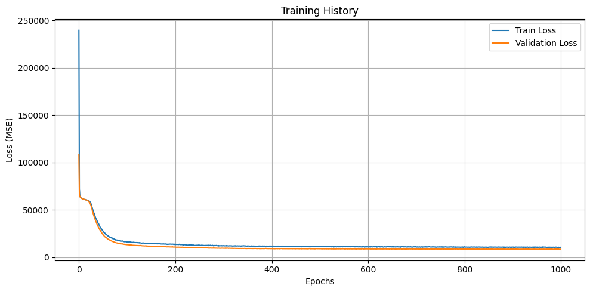

Bike Rentals Prediction Case Study
Bike Rentals Prediction Case Study
🚲 Project Summary
This project aimed to predict hourly bike rental demand using deep learning. I engineered temporal and contextual features, such as COVID-era flags and holiday indicators, to capture patterns in bike usage from 2011 through 2024.
ğŸ› ï¸ Tools & Technologies
- Python for scripting and modeling
- TensorFlow / Keras for building deep learning models
- Pandas & NumPy for data cleaning and transformation
- Scikit-learn for data preprocessing and evaluation metrics
- Matplotlib for plotting results
- Quarto for documentation
🧪 Key Techniques Used
✅ Feature Engineering
Created contextual features such as COVID-phase indicators, time-based encodings (year, month, day of year), and workday splits.
✅ Neural Network Training
Built and trained a 3-layer deep neural network to learn rental behavior patterns.
✅ Model Evaluation
Used metrics like MAE, MSE, and R² to evaluate performance. Validated visually with residual and error plots.
✅ Overfitting Mitigation
Included dropout layers and used training history to assess stability between training and validation loss.
🔠Key Insights
Redundant Feature Removal

Figure X. Correlation Heatmap Showing Perfect Correlation Between temp_c and feels_like_c
Upon analyzing the correlation heatmap, I noticed that temp_feel (feels-like temperature) was perfectly correlated with temperature. Not only were they statistically redundant, but they also had nearly identical effects on bike rental volume. To reduce noise and simplify the feature space, I chose to remove temp_feel entirely from the model.
Cyclical Encoding Was Crucial
Bike rentals follow strong daily and seasonal cycles — rush hours, weekdays vs. weekends, and summer vs. winter all affect usage. I used sine and cosine encodings for hour, month, and day-of-year to help the model recognize these patterns without being confused by time boundaries (like midnight or end of year).
Model Architecture Tuning
The final model used three dense layers (128 → 64 → 16) with ReLU activations, batch normalization, and dropout rates of 0.1, 0.4, and 0.4 respectively. This design helped prevent overfitting while capturing nonlinear patterns in time and weather-driven behavior.
Training Cutoff Strategy
Only data before October 31st was used for training, with November–December left as a true holdout set. This mimics real-world forecasting and tests how well the model generalizes into unseen future demand.
Operational Opportunity: Cleaning Downtime
An operational insight surfaced when analyzing post-COVID usage patterns by hour and day. As seen below, bike rental activity is at its lowest between 2:00 AM and 5:00 AM, especially on Mondays, which consistently show the lowest demand of the week.
This suggests a practical opportunity for bike maintenance or cleaning crews to service bikes during this window with minimal disruption to riders.

Figure 5. Hourly Rentals Post-COVID: Ideal Cleaning Times (2–5AM)
Figure 6. Weekday Demand (Monday is consistently lowest)
📊 Results Summary
- RMSE: 141.30
- MAE: 97.10
- Median Absolute Error: 64.59
- R² (Full): 0.859
- R² Before 21st: 0.894
- R² After 20th: 0.780
- Predictions within 5%: 10.38%
- Predictions within 10%: 21.09%
- Predictions within 20%: 42.25%
The model captured temporal trends and seasonal fluctuations with high accuracy. On average, predictions were within about 97 rentals of actual values. It was particularly strong before the holiday period, but showed some underestimation during late December peaks. It performed especially well in the period after COVID, when demand patterns began to stabilize and rise again.
📈 Visuals

Figure 7. Actual vs Predicted Rentals Over Full Timeline (Holdout)

Figure 8. Prediction Error Distribution (Colored by Error Band)

Figure 1. Training and Validation Loss Over A Period Of 1000 Epochs (Which shows original model Overfitting, no oscillations made it obvious )

Figure 2. Actual vs Predicted Rentals Over Time

Figure 3. Absolute Prediction Error Over Time

Figure 4. Predicted vs Actual Rentals (Residual Plot)
📅 Supplementary Materials
- Case Study Introduction (PDF)
- Stakeholder Discussion (PDF)
- Project Requirements (PDF)
- Training Dataset (CSV)
- Holdout Data (CSV)
- 🔗 Final model and predictions are saved as
bike_model_covid.kerasandbike_scaler_covid.pkl
- 📓 You can run the model through my notebook here – Notebook (Google Colab)